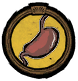

Game Mechanics
Health is a measurement of overall physical well-being. Unlike Hunger and Sanity, Health does not drain over time. Health is lost when a character takes damage while attacked, burning, starving, freezing, or overheating. Some foods like Monster Meat can also reduce Health, and having a Meat Effigy lowers max Health. Losing all Health results in death.
Hunger is the measurement which determines whether or not the character is starving. When the Hunger meter is emptied, Health will begin to drain at 1.25 points per second until something is eaten or the character dies. Most food will restore the Hunger meter when eaten. The amount restored depends on the food eaten; cooked food typically restores more than raw food. Some food also has the potential to decrease Hunger, Sanity, or Health. Also, when going to sleep in a Straw Roll, Fur Roll or a Tent, the character takes an immediate hunger penalty.
Sanity is the character's "mental health". As sanity decreases, the player's vision becomes shaky, over-saturated, and bright, whispers are heard, and Shadow Creatures start to appear. These creatures become aggressive and will attack the player when almost completely insane.
Being alone in the wilderness will take its toll. Generally speaking, being in close proximity to Monsters, Darkness, Rain, or eating spoiled Food decreases sanity; while wearing certain clothing, eating Jerky and Crock Pot food, being near friendly Pigs, and sleeping increases sanity.
Spoilage occurs with all types of food in Don't Starve. If the player keeps food for too long without eating it, the food item will begin to spoil and rot. The item in the inventory will start as a fresh item if it can spoil. It will first turn stale, then spoil, and finally turn into an inedible pile of Rot which can be used as weak fertilizer for Farms and Plants.
Each stage of spoilage will diminish the positive effects of the food and will eventually add a negative effect to it. These effects do not apply to the character WX-78.
The spoil rate will double if the food is left on the ground, or it can be cut in half if it is placed in an Ice Box .
Day and Night Cycle
A full Day lasts for 8 real-time minutes (split into 16, 30-second segments) and is divided into 3 phases. The Day phase is the brightest and is represented by the yellow segments of the clock in the top-right corner of the screen. Dusk is shown by red segments and is the part of the day when the sun is setting and the world becomes darker, although a light source is not yet required. When Night falls, the world quickly becomes completely dark and a light source is necessary. Night is represented by dark blue segments on the clock.
Moon Cycle
The Moon Cycle is a gameplay mechanic which controls the appearance of Werepigs and Woodie's transformation. Werepigs are normal Pigs who are caught outdoors during a full moon, and Woodie turns into a Werebeaver whenever there's a full moon. The moon casts down a dim, blue-tinted light over the world, so the player can safely explore without fear of Charlie. Mushrooms have a chance of turning into Mushtrees. Flowers can turn into Evil Flowers. The eyes on Pig and Merm heads will glow white, generate an insanity aura, and may drop Nightmare Fuel when hammered. Ghosts will emerge from any type of Grave. Glommer's Statue also grows Glommer's Flower, and causes a Glommer to spawn nearby. The complete Moon Cycle lasts for 16 days and then repeats. Each phase of the Moon lasts for two nights.
Seasons
There are four seasons: Spring, Summer, Autumn, and Winter. During Autumn, the days are longer, crops grow, and Food is easier to find. In Winter, Nights are longer and the player must stay warm to avoid Freezing to death. Plants stop growing and many creatures stop being active, while other creatures can only be encountered during Winter. During Summer, the player is susceptible to Overheating and plants wilt. During Spring, there is no Freezing or Overheating, but rainfall is excessive and can cause Wetness, which will lead to Freezing after prolonged exposure. Rabbit holes will close, forcing the player to switch food sources in the Winter and Bees will turn hostile, increasing the challenge during Spring.
Spring and Autumn are considered "safe" seasons, while Summer and Winter are considered "dangerous." Because of this, when starting a new game, the default starting season will be either Spring or Autumn.
Freezing and Overheating
Freezing is a game mechanic which makes surviving Winter (and heavy rainfall during Spring) more difficult. Whenever the player is away from a heat source for too long they will begin to freeze. Freezing occurs when body temperature drops 10°. The edges of the screen will become encrusted with ice, as a warning to the player that they are about to freeze. The player should seek a heat source as soon as possible when this happens. If a source of heat cannot be found, a second layer of ice crust will form over the edges when body temperature drops below 0°, causing the player to take damage of 1.25 Health per second. Freezing stops soon after the player finds a sufficient heat source.
Overheating is a game mechanic which functions as the Summer counterpart to Freezing that happens in Winter. When the player begins to take in too much heat, the edge of the screen will begin to turn orange and become a hazy ring while a warning sound plays. Once the player begins to take continuous damage, the screen will gain a reddish ring within the orange haze. The only way to stop this is by cooling off, such as being near a sufficiently cold source.